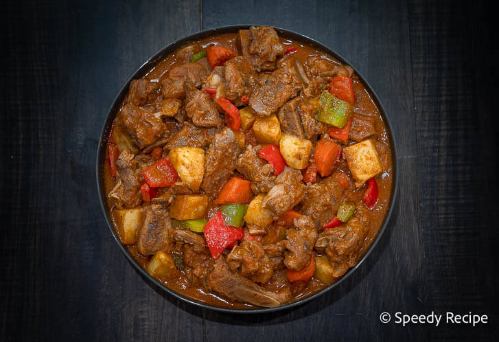

Home
PORK CALDERITA

Description
This is a hearty and flavorful pork caldereta recipe that is perfect for family gatherings.
Ingredients
- 2 lbs pork shoulder, cut into cubes
- 1/4 cup vegetable oil
- 1 onion, chopped
- 4 cloves garlic, minced
- 2-3 medium potatoes, diced
- 1 carrot, sliced
- 1 bell pepper, sliced
- 1 cup tomato sauce
- 1/2 cup liver spread (optional)
- 1/4 cup soy sauce
- 1 teaspoon paprika
- Salt and pepper to taste
- 1 cup water or beef broth
Steps
- Heat the vegetable oil in a large pot over medium heat.
- Add the chopped onion and minced garlic, sauté until fragrant.
- Add the pork cubes and cook until browned on all sides.
- Add the diced potatoes, sliced carrot, and bell pepper; stir well.
- Pour in the tomato sauce, liver spread (if using), soy sauce, paprika, salt, and pepper.
- Add water or beef broth to cover the ingredients. Bring to a boil.
- Reduce heat to low, cover, and simmer for about 45 minutes or until the pork is tender.
- Adjust seasoning if necessary before serving hot with rice.